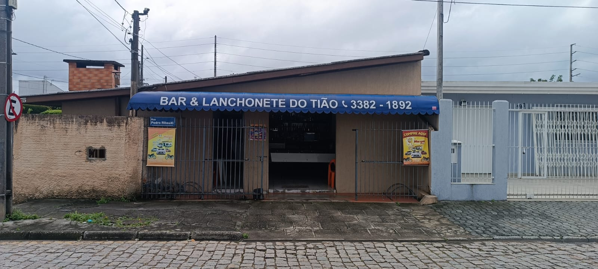

Fundado no ano de 1992 por Sebastião, mais conhecido como Tião, o Bar se tornou um ícone do Bairro Jardim Ipê. Natural de Bom Descanso/MG, mas se mudou para o Paraná ainda quando criança para a cidade de Ibaiti. Logo aos 22 anos, veio para a capital do Paraná onde trabalhou em diversas empresas que proporcionaram a ele, diversos conhecimentos em várias áreas. Tião teve a idéia de fundar o bar durante seu serviço na empresa Coca-Cola, onde lidava diariamente com entregas de produtos para os bares em sua rotina. Hoje, com 32 anos de existência, o Bar é frequentado, em sua maioria por moradores locais, sendo um ambiente familiar e agradável para todos.
Situado na rua Pedro Ribaski, o Bar do Tião está localizado em um endereço perto da área comercial do bairro Ipê.
